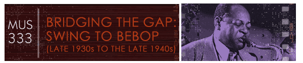

Ben Webster, along with Coleman Hawkins and Lester Young, are probably the most influential of all tenor sax performers. As an improviser, Webster was always very tuneful in his approach so that his improvisation sounds nearly like a complete thought.
Read the article on Ben Webster.
In 1940, Duke Ellington arranged for his big band a new tune, "Cotton Tail," composed by Webster to the chord changes of George Gershwin's popular song "I Got Rhythm." The Gershwin song and its harmony dictate the form of the new piece: 32-bar A A B A song form. Note that Ellington drops the final A section of the first chorus and substitutes a four bar transition to the second chorus.
Listen, especially, to the second and third chorus which features Webster. Composer Gunther Schuller comments that Webster often liked to enter and exit a solo section "unobtrusively, flowing in, as it were, on the prevailing tide of the music. His stealthy entrance on Cotton Tail is in its subtleness and surprising understatedness one of the all-time hair-raising moments in jazz" (Schuller 1989,528). "And Ben! Oh that Ben!" said Ellington big band guitarist Fred Guy, "You could feel the tension rise the moment he began to solo" (Lawrence 2001,291).
Note, too, Ellington's very forward-looking arrangement in the fifth chorus going into the first half of the sixth chorus which anticipates more modern styles of improvisation, here written out for the full sax section of his big band.
Follow the chart and listen to Ben Webster perform in Duke Ellington and His Famous Orchestra's "Cotton Tail" (1940).
Click to see a transcription of Webster's solo in "Cotton Tail."
1st chorus (Melody)
0:00-0:09 A 8mm saxes and trumpets play tune
0:09-0:16 A 8mm
0:16-0:25 B 8mm sax and trumpets in call-and-response pattern
0:25-0:29 transition 4mm no final A
2nd chorus
0:29-0:37 A 8mm Ben Webster, tenor sax solo backed by
0:37-0:45 A 8mm
0:45-0:54 B 8mm add brass
0:54-1:01 A 8mm Webster backed by rhythm section
3rd chorus
1:01-1:09 A 8mm Webster continues backed by rhythm section
1:09-1:17 A 8mm
1:17-1:25 B 8mm add brass
1:25-1:33 A 8mm Webster backed by rhythm section
4th chorus
1:33-1:41 A 8mm brass with rhythm section
1:41-1:48 A 8mm
1:48-1:56 B 8mm Harry Carney, baritone sax solo
1:56-2:04 A 8mm Duke Ellington, piano solo
5th chorus
2:04-2:12 A 8mm sax section, scored like modern jazz improv,
backed by rhythm section
2:12-2:20 A 8mm
2:20-2:28 B 8mm
2:28-2:35 A 8mm
6th chorus
2:35-2:43 A 8mm sax section continues with brass shout
2:43-2:52 A 8mm
2:52-2:59 B 8mm brass
2:59 to end A 8mm Intro returns: saxes and trumpet play tune